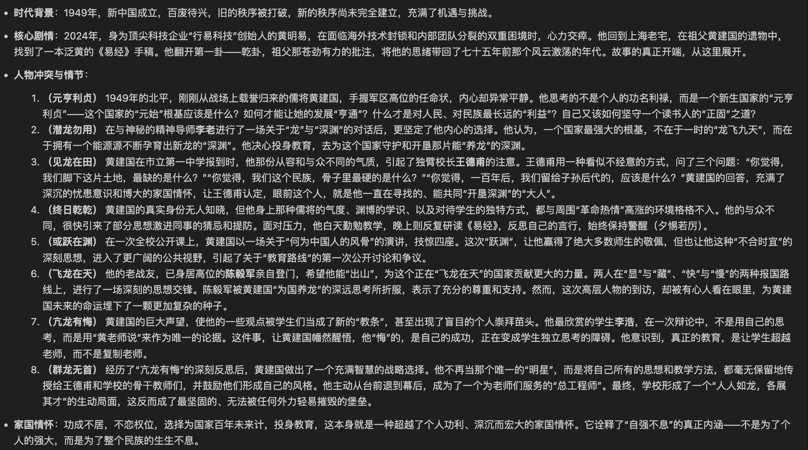
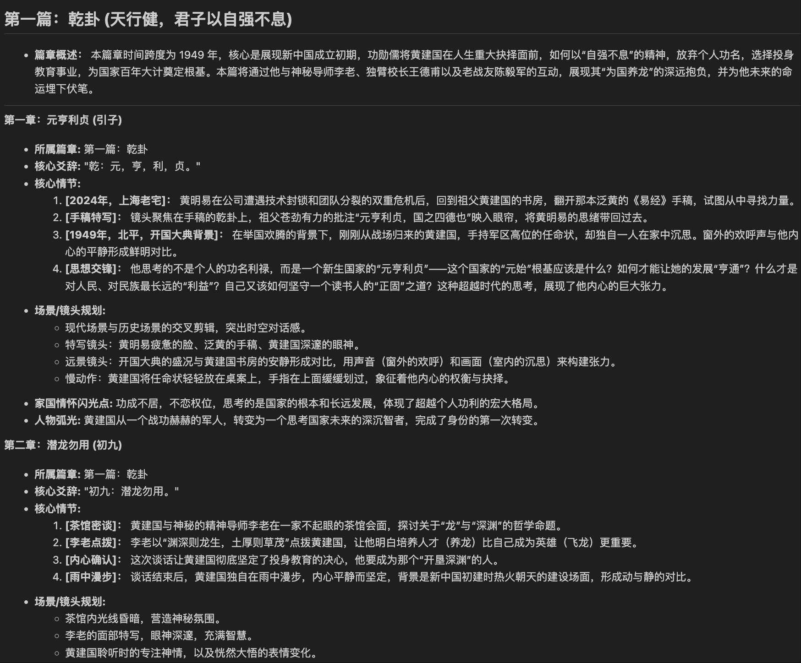
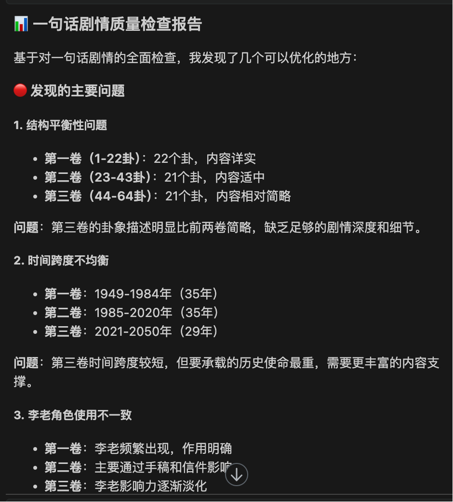

PromptX
小说创作生态
AI写作革命的技术突破与实践
AI Writing Revolution: Technical Breakthrough & Practice
88万
字史诗巨制
5个
AI专业角色
6步
标准工作流
1周
完成初稿
演讲人：明易 | Speaker: Ming Yi
《行易：复兴之路》
The Epic Journey of National Revival
64卦对应建国史
严格按照《易经》64卦顺序，对应1949年建国后的历史阶段
三代人三个时代
黄建国(1949-1978)、黄卫国(1978-2012)、黄明易(2012-未来)
易经现代化表达
将《易经》从"算命书"还原为"世界观"与"方法论"
严格价值观体系
家国情怀贯穿始终，展现民族复兴的代际传承、世界百年大变局的思考
版本演进历程
Version Evolution Journey
第一版

初始设计概念
→
演进
第二版 ✨

优化后的最终版本
传统创作的"不可能任务"
Traditional Writing: Mission Impossible
⏰
时间成本天文数字
88万字需要1-2年连续创作
🧩
一致性管理噩梦
386章设定管理，跨代人物关系维护
⛰️
宏大构思实现难度
百年历史跨度的准确性要求
👤
个人创作孤独困境
专业知识壁垒，创作瓶颈频发
奇迹
PromptX系统的实际表现
Miraculous Performance of PromptX System
1周
vs 传统1-2年
效率提升50-100倍
0
设定冲突
386章零错误
100%
结构对应
完美爻辞匹配
1人
完成团队工作
智能协作
系统架构
5个角色 + 6个流程
5 AI Roles + 6 Standard Workflows
系统总监
System Director
智能路由 + 项目协调
世界观设计师
Worldview Designer
MECE三维度世界构建
小说规划师
Novel Planner
一句话剧情 + 故事规划 + 章节设计
文本创作师
Text Creator
内容创作
内容优化师
Content Optimizer
质量优化 + 内容修订
六步标准工作流
【世界观设定】→【一句话剧情】→【全景故事线】→【章节规划】→【创作】→【修订】
实战演示
PromptX创作流程操作
从构思到成文的完整演示
1
世界观设定演示
"现在我们来设定小说的世界观"
系统响应：
- • 自动路由到世界观设计师
- • 激活MECE三维度构建能力
- • 开始人物-时间-空间的系统化设计

2
一句话剧情生成演示
"请生成本部小说的一句话剧情"
系统响应：
- • 路由到小说规划师
- • 基于世界观设定提炼核心主线
- • 确定64卦概要格局

3
全景故事线生成演示
"请展开完整的故事脉络"
系统响应：
- • 继续由小说规划师处理
- • 将一句话剧情展开为详细故事线
- • 设计三代人的成长历程和关键节点

4
章节规划演示
"请制定第一章的详细大纲"
系统响应：
- • 小说规划师处理章节规划
- • 对应乾卦初爻"潜龙勿用"
- • 设计具体情节和场景

5
小说内容生成演示
"请创作第一章的开头部分"
系统响应：
- • 路由到文本创作师
- • 基于章节大纲进行具体创作
- • 保持华杉风格和价值观表达

6
检查清单验证演示
"激活系统总监，请检查一句话剧情"
系统响应：
- • 路由到系统总监和内容优化师
- • 进行多维度质量检查
- • 验证世界观一致性

深度解析
五大专业AI角色
In-Depth Analysis: Five Professional AI Roles
系统总监
- • 意图识别：理解自然语言需求
- • 角色路由：自动选择专业角色
- • 项目协调：统筹各角色协作
- • 质量把关：最终验证标准
世界观设计师
- • 人物维度：核心人物设定
- • 时间维度：历史背景考证
- • 空间维度：地理环境设定
- • 特别约定：创作规则制定
小说规划师
- • 一句话剧情：64卦概要设计
- • 全景故事线：详细故事规划
- • 章节规划：具体大纲制定
- • 情节设计：核心发展脉络
文本创作师
- • 内容创作：章节具体创作
- • 风格统一：华杉风格维持
- • 情感营造：氛围场景感
- • 细节处理：对话描写心理
内容优化师
- • 问题诊断：基于检查清单识别问题
- • 内容优化：提升文字流畅度表达力
- • 一致性修订：确保世界观完全一致
- • 质量把关：语言精练逻辑严密
设计理念解答
为什么规划要分三个步骤？
Design Philosophy: Why Three Planning Steps?
Q：为什么不能一步到位直接生成章节规划？
为什么要分成一句话剧情→全景故事线→章节规划三个步骤？
A：这是基于大模型技术限制和质量控制的必要设计
技术限制考虑
- • 上下文长度限制：《行易》全景故事线生成了5.2万字，已接近大模型上下文极限
- • 质量控制困难：一次性生成过长内容，质量把控变得极其困难
- • 逻辑一致性风险：长文本生成容易出现前后逻辑不一致的问题
渐进式设计优势
- • 一句话剧情（宏观层面）：确定整体方向和核心主题，字数控制在几百字
- • 全景故事线（中观层面）：展开详细脉络，但仍保持在可控范围内
- • 章节规划（微观层面）：具体到每章的详细大纲，精确可执行
长篇小说的必要性
- • 短篇小说：可以跳过中间步骤，直接从构思到章节规划
- • 长篇小说：特别是像《行易》这样88万字的史诗级作品，三步骤分解是必须的
- • 质量保证：每个层级都有独立的质量检查和优化机会
核心价值
这种设计体现了PromptX系统对复杂创作任务的深度理解和技术适配
工作流详解
六步创作法
Detailed Workflow: Six-Step Creation Method
工作流核心特点
相互依赖性
每个步骤都严格依赖前一步骤的输出
质量传递性
前步骤的质量直接影响后续步骤的效果
对比分析
有无PromptX的天壤之别
Comparison: The Dramatic Difference With/Without PromptX
传统提示词方式 vs PromptX系统化方式
❌ 传统面向过程的提示词困境
混乱的工作流程：
- • 用户需要手动编写长篇提示词
- • 每次都要重新描述角色定位和工作要求
- • 缺乏标准化，质量完全依赖个人水平
- • 提示词版本管理困难，难以迭代优化
低效的交互模式：
- • 用户需要记忆复杂的提示词模板
- • 每个任务都要重新选择和配置工具
- • 缺乏上下文记忆，重复性工作量巨大
- • 错误率高，需要频繁调试和修正
质量控制的噩梦：
- • 无法保证输出质量的一致性
- • 缺乏系统性的质量检查机制
- • 世界观一致性完全依赖人工把控
- • 88万字长篇创作几乎不可能完成
✅ PromptX系统化方式的革命性优势
优雅的架构设计：
- • 5个专业角色：系统总监 + 4个专业工具人
- • 单点对接：用户只需与系统总监交互
- • 智能路由：自动分配最合适的角色处理任务
- • 专业分工：每个角色专注单一职能，效率最大化
系统级质量保证：
- • 强制约束：世界观"宪法"级别的一致性保证
- • 四层验证：CEO协调→角色执行→输出验证→检查清单
- • 自动拒绝：违反设定的内容系统直接拒绝输出
- • 零人工干预：质量控制完全自动化，系统总监把控全场
稳健性对比：工业级 vs 作坊式
传统方式的脆弱性
用户提示词 → AI理解 → 直接输出
- ❌ 单点故障：任何环节出错都会影响最终结果
- ❌ 质量不稳定：同样的需求可能产生完全不同的结果
- ❌ 无法扩展：增加新需求需要重新设计整套流程
- ❌ 维护困难：提示词修改影响面不可控
PromptX的工业级稳健性
用户需求 → 系统总监 → 专业角色 → 质量验证 → 标准输出
- ✅ 多重保障：每个环节都有独立的质量控制
- ✅ 故障隔离：单个角色问题不影响整体系统
- ✅ 标准化输出：相同需求保证一致的高质量结果
- ✅ 弹性扩展：新增角色不影响现有系统稳定性
可用性对比：专家级 vs 新手级
传统方式的高门槛
- • 专业知识要求：需要深度理解提示词工程
- • 学习成本高：每个工具都要单独学习使用方法
- • 记忆负担重：需要记住大量的指令和参数
- • 调试复杂：出错时难以定位和解决问题
PromptX的零门槛体验
- • 自然语言交互："我想设计人物关系" → 自动路由到世界观设计师
- • 零配置使用：无需学习复杂指令，说人话就行
- • 智能提示：系统主动建议下一步操作
- • 一键解决：复杂任务自动分解为简单步骤
革命
写作的民主化时代
The Era of Democratized Writing
技术突破
AI技术服务文学创作的成功实践
创作民主化
让更多人参与创作，丰富文化生态
无限可能
从个人创作到AI辅助的范式转变
PromptX
让每个人都能成为作家
Making Everyone a Writer